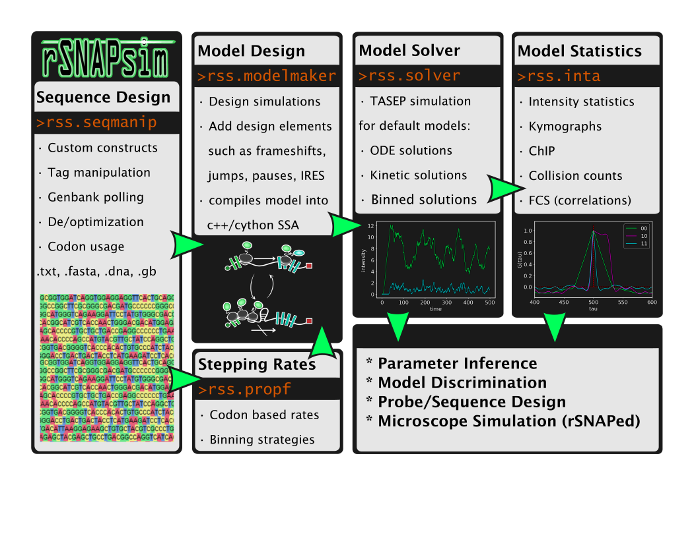

Introduction

The RNA Sequence to NAscent Protein Simulation(rSNAPsim) is a Python module that provides several useful submodules for designing, simulating, analyzing, and fitting mRNA translation models. The core functionality is to go from a nucleotide sequence to codon-dependent TASEP translation model.
rSNAPsim provides built in methods for the following:
- Reading and manipulating mRNA sequences at the nucleotide or amino acid level
sequence optimization / deoptimization
codon bias metric calculations (CAI, tAI)
fluorescent tag editing
- Solving simulations of ribosomal movement on mRNA
Multicolor Fluorescent tag simulations
Gillespie, ODE, Ballistic solutions
Collision statistics and simulations
Ribosomal loading / density / dwell times
FRAP and Inhibitor (Harringtonine) simulations
Kymograph creation
- Analyzing intensity traces from simulated nascent chain tracking
Intensity auto/cross-correlations or covariances
Coarse correlation plots
Analytical moment solutions (for ODE models)
- Novel models
custom model builder: Create simulations of phenomena like frameshifting, IRES, run-through stops
tRNA pool resource simulation
vRNA replicon simulation (arbitrary protease cleavage sites)
- Flourescent Intensity Analysis
FCS, Multicolor Correlations
Intensity statistics
- Optimization
Load and manage intensity data and fit to provided models
Metropolis Hastings / scipy optimization
Installation
Dependencies
Python 2.7 or Python 3.5+
- SciPy
NumPy
Matplotlib
Pip install
conda install eigen
pip install rsnapsim
pip install rsnapsim-ssa-cpp
Recommended Enviroment
Its recommended to create a new base conda enviroment as well:
conda create --name <myenv> python=<python_version>
conda activate myenv
Conda install
conda install eigen
pip install rsnapsim
pip install rsnapsim-ssa-cpp
If the rsnapsim-ssa-cpp fails to compile / install, you may have to include some custom compilers in the anaconda enviroment to point too:
Linux
conda install -c anaconda gxx_linux-64
conda install -c anaconda gcc_linux-64
MacOS
conda install -c anaconda clang_osx-64
conda install -c anaconda clangxx_osx-64
Google colab
%%capture
!apt install libeigen3-dev
!ln -sf /usr/include/eigen3/Eigen /usr/include/Eigen
!pip install rsnapsim-ssa-cpp
!pip install rsnapsim
!pip install --upgrade rsnapsim